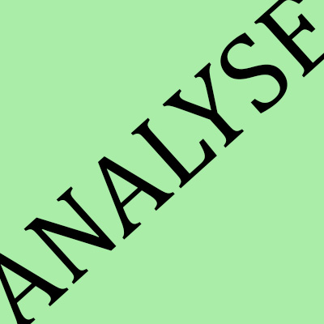

WEBUTVIKLING 2022
Denne siden vil bli brukt til å vise kunnskaper innen faget webutvikling. Det vil bli vist kunnskap innen HTML, CSS, responsivt design, ulike typer CMS, retningslinjer for god SEO, samt en analyse av hele nettstedet. Under analyse finnes det også en tilgjengelighetserklæring. Det vises også grunnleggende kunnskap i kontaktskjema og deling for sosiale medier.
Lenker til kilder/inspirasjon som er brukt ligger under hver artikkel, under "kilder". Studenten hadde webutvikling også i 2021, derfor er noe brukt fra siden som ble bygget opp under det semesteret. Der det er linket til "itstud-ammeum..." er det derfor studentens egen kode/forelesningsoppgaver fra 2021 det linkes til.
Kontakt oss
UU VS SEO
Universell utforming betyr at alle, uavhengig funksjonsevne skal kunne bruke nettstedet på like premisser. Fordi samfunnet blir mer og mer digitalt, må det hele tiden tilrettelegges slik at også de med ulik grad av funksjonsevne kan bidra aktivt til samfunnet, som for eksempel å kjøpe billetter til offentlig transport. I denne artikkelen skal vi se nærmere på hva Universell utforming og SEO er og hvordan vi kan implementere dette på en nettside.
Trykk her for å lese mer om UU vs SEO

CMS
Content management system eller CMS er, som det ligger i navnet, et hjelpemiddel som behandler og administrerer innhold. Vi har noen ulike typer CMS, som fungerer til litt ulik bruk. Noen av de er enklere å administrere av uerfarne personer, mens noen av de er litt mer avanserte, og med flere muligheter. Det finnes også mange forskjellige løsninger. I denne artikkelen går vi gjennom noen av de ulike CMS løsningene og typene som finnes, og sammenligner de med hverandre.
Trykk her for å lese mer om CMS

ANALYSE
Analyse av nettsted er viktig for å sjekke om man oppnår god SEO og om siden dekker de gjeldende krav til universell uforming som er påkrevd og er tilgjengelig for alle. Ikke alt er like lett å sjekke/oppfatte selv, derfor er verktøy som wave, lighthouse o.l en god måte å gjøre analyse på. I denne artikkelen beskriver og forklarer jeg min analyse av dette nettstedet, og hva jeg har gjort av forbedringer og endringer for å å oppnå bedre resultater.
Trykk her for å lese mer om analyse